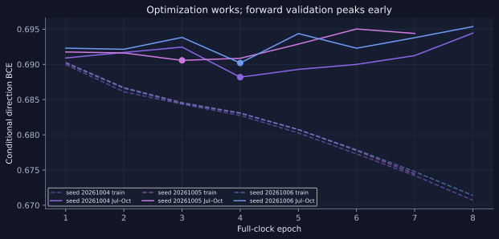
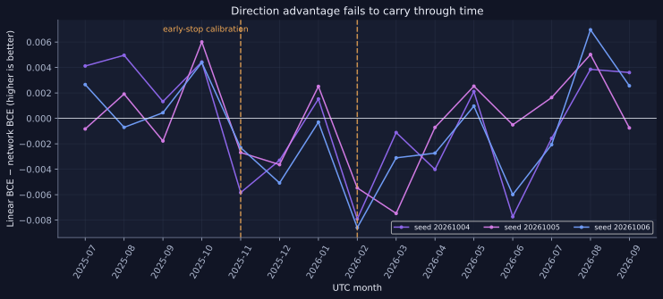
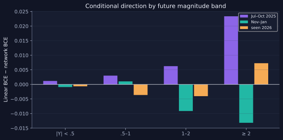
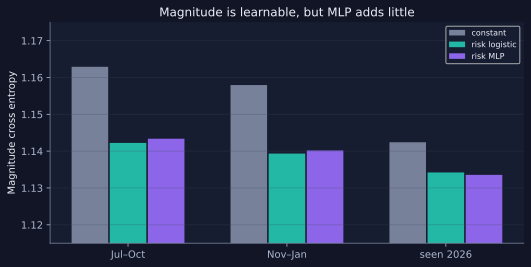
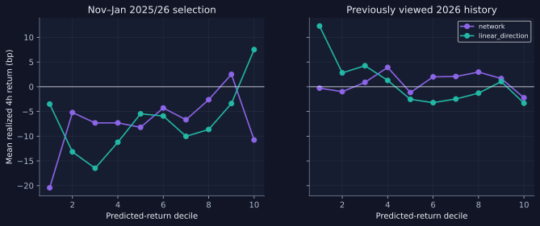
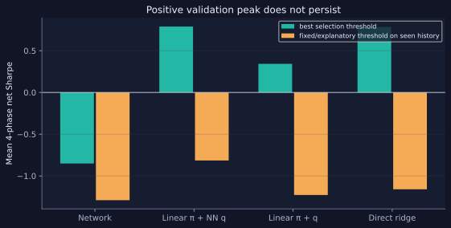
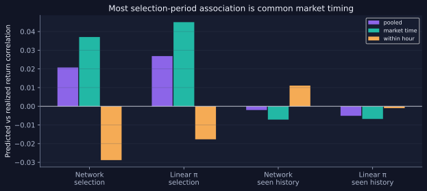

把 4 小时可执行收益拆解为条件方向与幅度概率，以真实时间顺序验证神经网络是否提供简单模型没有的信号。
研究结论：暂不部署12 个永续合约、统一 5 分钟 K 线。整点仅使用已完成 bar；5 分钟后按下一开盘价进入，4 小时后按开盘价退出。训练期截至 2025-06-30，2025-07–10 用于逐轮早停，2025-11–2026-01 用于交易规则选择。2026-02–09 曾在旧研究中查看，本文只作探索性历史诊断，不是新的独立测试集。
每条训练标签须在本期截止前成熟；标准化、因果波动下限、方向先验和档位代表值只由训练期拟合。小时相位每轮完整覆盖，按分散小时组成 24×12 的批次。训练输入包含过去 12 小时的 5 分钟序列、72 小时的完整小时序列及少量 7/30 日状态。
幅度档固定为 |Y| 的 [0,.5)、[.5,1)、[1,2)、[2,∞)。方向主干只接受真实幅度档对应的 BCE 梯度；独立小网络接受幅度 CE。快 96/慢 48 的两层因果卷积与 32 维状态投影直接拼接，融合到 96 维后经过一个残差块，输出共享基础方向 logit 和四个收缩档位偏移。没有波动辅助损失更新方向主干。
训练使用 AdamW、2e−4 峰值到 2e−5 余弦衰减、首轮 warmup、时序 dropout .05、融合 dropout .10、梯度裁剪 1.0、最多 12 个完整覆盖轮、耐心 4 轮。三个预设随机种子分别在第 4、3、4 轮达到最佳校准期权重。

| 随机种子 | 最佳 epoch | Jul–Oct 相对线性 CE 增益 | Nov–Jan 相对线性 CE 增益 |
|---|---|---|---|
| 20261004 | 4 | +0.00373 | -0.00251 |
| 20261005 | 3 | +0.00135 | -0.00126 |
| 20261006 | 4 | +0.00170 | -0.00257 |
条件方向的交叉熵必须与各档训练期常数先验、同状态低容量 logistic 比较。下表正值表示神经网络优于线性模型。置信区间是按完整跨币面板做 7 日循环移动块、2,000 次重采样的描述性区间；校准期使用它选择 epoch，因此区间不修正模型选择偏差。
| 时期 | 网络 BCE | 线性 BCE | 增益 | 95% 块重采样区间 |
|---|---|---|---|---|
| 2025 Jul–Oct · early stop | 0.68818 | 0.69190 | +0.00373 | [+0.00128, +0.00627] |
| 2025 Nov–2026 Jan · selection | 0.69202 | 0.68952 | -0.00251 | [-0.00737, +0.00206] |
| 2026 Feb–Sep · seen history | 0.69706 | 0.69543 | -0.00164 | [-0.00420, +0.00072] |


下表是条件方向 BCE 相对同状态 logistic 的增益。三个时期使用同一冻结权重，任何单币改善都没有被重新筛选为新策略。
| 合约 | Jul–Oct 校准 | Nov–Jan 选择 | 已查看 2026 历史 |
|---|---|---|---|
| ADAUSDT | +0.0043 | -0.0068 | -0.0040 |
| AVAXUSDT | +0.0029 | -0.0007 | -0.0016 |
| BCHUSDT | -0.0009 | -0.0014 | +0.0012 |
| BNBUSDT | +0.0041 | -0.0010 | -0.0015 |
| BTCUSDT | +0.0046 | -0.0012 | +0.0000 |
| DOGEUSDT | +0.0050 | -0.0076 | -0.0019 |
| ETHUSDT | +0.0079 | -0.0040 | +0.0020 |
| LINKUSDT | +0.0038 | -0.0024 | -0.0027 |
| LTCUSDT | +0.0050 | -0.0013 | -0.0040 |
| SOLUSDT | +0.0029 | -0.0032 | -0.0021 |
| TRXUSDT | -0.0005 | +0.0008 | -0.0046 |
| XRPUSDT | +0.0056 | -0.0013 | -0.0004 |
| 时期 | 小 MLP CE | 线性风险 CE | 常数先验 CE |
|---|---|---|---|
| Calibration | 1.14337 | 1.14223 | 1.16289 |
| Selection | 1.14018 | 1.13932 | 1.15795 |
| Seen history | 1.13356 | 1.13421 | 1.14241 |

收益读出使用仅由训练期估计、向正负合并档位均值收缩的正负代表幅度，最后逐样本乘回可见的 v。尾档代表值约为负侧 3.065、正侧 3.077 个尺度单位，不以任意整数或固定上限代替真实尾部。
只在 Jul–Oct 校准期拟合共享的方向预测偏移收缩系数 0.745 和幅度概率系数 0.990，向训练期先验收缩，不使用逐币或逐档校准器。下表只做敏感性诊断，不改变此前冻结的交易规则；早停也使用 Jul–Oct，因此该期校准结果有双重使用风险。
| 时期 | 原始方向 CE 增益 | 收缩后 CE 增益 | 原始收益相关 | 收缩后收益相关 |
|---|---|---|---|---|
| Jul–Oct 校准 | +0.00373 | +0.00430 | +0.0532 | +0.0523 |
| Nov–Jan 选择 | -0.00251 | -0.00092 | +0.0208 | +0.0207 |
| 已查看 2026 历史 | -0.00164 | +0.00151 | -0.0020 | -0.0022 |
收缩使已查看历史的方向交叉熵相对线性基线略为正，但没有改善收益相关，选择期对线性模型的方向增益仍为负。概率评分更好并不能自动转化成可交易收益。

12 币等权，−1/0/+1 仓位；四个互不重叠的 4 小时相位分别计算。单边费用和滑点假设为 6bp，并按真实仓位变化收费；资金费按事件区间结算。只在 2025-11–2026-01 从 0、6、12、18bp 预测收益阈值中选择，要求平均参与率至少 5%。四相位共享行情，Sharpe 是描述性比较，不是四份独立置信证据。
方向神经网络在选择期各阈值的平均净 Sharpe 最高仍为 -0.85。经济胜者来自线性方向 + 神经幅度的组合，并且后续已查看历史未保持正收益；因此网络主策略没有完成“方向增量 → 预期收益 → 净交易优势”的三段证据链。


费用不是全部失败原因：选择期网络在零固定成本下为正、加入交易成本后为负；已查看的 2026 历史即使零固定成本也没有转正。资金费仍计入两列，零成本仅去掉固定费和滑点情景。
| 规则与时期 | 零固定成本净 Sharpe | 6bp/侧净 Sharpe |
|---|---|---|
| 网络 · 选择期 | +0.36 | -0.85 |
| 网络 · 已查看历史 | -0.13 | -1.29 |
| 冻结线性方向 · 选择期 | +1.25 | +0.79 |
| 冻结线性方向 · 已查看历史 | -0.50 | -0.81 |
| 冻结线性方向策略 | 选择期 | 已查看历史 |
|---|---|---|
| 平均年化换手成本贡献 | -8.4% | -5.1% |
| 平均年化资金费贡献 | 0.1% | 0.1% |
| 平均参与率 | 7.8% | 4.3% |
只改变已冻结规则读出中的最高幅度档代表值，不重新选阈值。它是对均值近似的压力测试，不构成新的策略选择。
| 已查看历史 | 四相位平均净 Sharpe | 参与率 |
|---|---|---|
| 尾档代表值 × 0.8 | -0.74 | 4.1% |
| 尾档代表值 × 1.0 | -0.81 | 4.3% |
| 尾档代表值 × 1.2 | -0.85 | 4.6% |
训练系统已经正常优化。三次方向训练从约 0.690 的在线 BCE 下降到约 0.671–0.674，验证峰值却出现在第 3–4 轮，之后反弹。早停保护了权重，但并没有创造可迁移的方向映射。小幅信号在校准期跨四月出现，后续对线性基线转负；幅度网络的改善大体可由简洁风险变量解释。这更符合非平稳弱信号与模型灵活度所致的泛化问题，而非梯度无法更新、样本数量太少或标签尺度数值下溢。
未解决的经济问题：分档概率只近似收益分布，档内幅度仍用训练期常数；开盘价成交是假设，6bp/侧是情景成本，尚无盘口容量约束；均值预测的绝对校准和阶段漂移仍弱。不能把选择期最佳 Sharpe 当真实未来收益保证，也不能据此扩大模型或微调旧测试区间。
下一轮研究应先做跨市场状态的因果机制检查、分数中共同市场成分与单币时间成分拆分、训练期拟合的轻量概率收缩和滚动折稳定性。保持当前模型与规则冻结，再用新数据决定是否值得部署；不对已查看历史重搜窗口、阈值或收益符号。